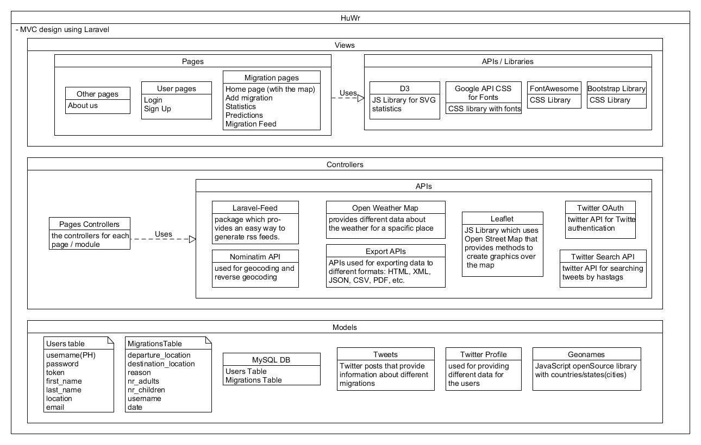

Pe baza datelor existente si a observatiilor semnalate de utilizatori (autentificati via un cont existent pe o platforma Web cu caracter social precum Facebook ori Twitter), se doreste realizarea unei harti interactive -- via un serviciu public de cartografiere precum OpenStreetMap -- referitoare la traseele migratiei persoanelor la nivel de natiune, de continent sau de glob. Raportarea unui eveniment migratoriu se va putea efectua fie direct in cadrul aplicatiei Web, fie folosind termenul de continut '#migration' in cadrul retelei sociale preferate de utilizator. Sistemul propus va fi capabil sa figureze si sa ofere statistici vizand aceste migratii sezoniere in functie de zona geografica (e.g., tranzit pe teritoriul unei tari), perioada de timp, climat, consideratii demografice etc. Fiecare nou raport introdus de utilizator va fi semnalat si in cadrul unui flux de stiri Atom. Sistemul Web dezvoltat va oferi statistici relevante disponibile ca documente HTML, CSV, JSON si PDF, putand fi partajate la nivelul retelelor sociale. Folosind datele disponibile, se vor putea oferi predictii referitoare la migrarea persoanelor spre un areal geografic.
2. Etapele dezvoltarii proiectului
Modelarea paginilor principale(use-case)
Crearea paginilor propriu-zise utilizand HTML5, CSS3 si Javascript(front-end)
Portarea proiectului pe framework-ul MVC(Laravel)
Modelarea arhitecturii la nivel de back-end
Studierea API-urilor si a librariilor disponibile pentru a rezolva diferite probleme
Crearea modelelor bazei de date
Generarea de date pentru baza de date
Impartirea pe module a aplicatiei
Implementarea fiecarui modul in parte si integrarea lor in cadrul aplicatiei
Finisarea aspectelor ce tin de design
Deployment(Heroku)
3. Arhitectura aplicatiei
Arhitectura aplicatiei HuWr impreuna cu API-urile/tehnologiile folosite pe fiecare nivel.
Diagrama poate fi privita si ca o arhitectura de tip MVC unde Data Layer-ul reprezinta modelele, Business Layer-ul reprezinta controllerele, iar Presentation Layer-ul reprezinta view-urile, insa pentru o perspectiva mai detaliata puteti studia urmatoarea digrama.

Arhitectura aplicatiei pe baza MVC(model-view-controller).
Diagrama reprezinta o perspectiva ceva mai detaliata a serviciilor folosite si structurii aplicatiei. Pentru a organiza aplicatia astfel am folosit Laravel PHP framework.
4. Progresul inregistrat
Modelarea paginilor principale(use-case)
Use case a unui utilizator al aplicatiei HuWr.
Un utilizator al aplicatiei HuWr va avea la dispozitie sa se logheze(utilizand contul din aplicatie/fie utilizand Twitter) avand astfel o serie de facilitati precum adaugarea de migratii, vizualizarea de statistici sau predictii si de asemenea de a consulta harta interactiva. Un utilizator care nu este logat va fi limitat doar la vizualizarea migratiilor pe o harta interactiva si de a consulta o lista de migratii. De asemenea, toti utilizatorii vor putea accesa API-ul pus la dispozitie de aplicatia noastra si de asemenea cateva detalii legate de noi(dezvoltatorii aplicatiei).
Crearea paginilor propriu-zise utilizand HTML5, CSS3 si Javascript(front-end)
In cele ce urmeaza vom prezenta o parte din paginile aplicatiei noastre urmand ca in ghidul de utilizare a aplicatiei sa prezentam fiecare pagina in parte si functionalitatea fiecareia.
Pagina de inregistrare a utilizatorilor.
Harta interactiva a migratiilor de pe glob.
Statistici SVG despre migratiile la nivel de tari.
Portarea proiectului pe framework-ul MVC(Laravel)
Structura fisierelor Controllers + Models in Laravel.
Structura View-urilor in Laravel.